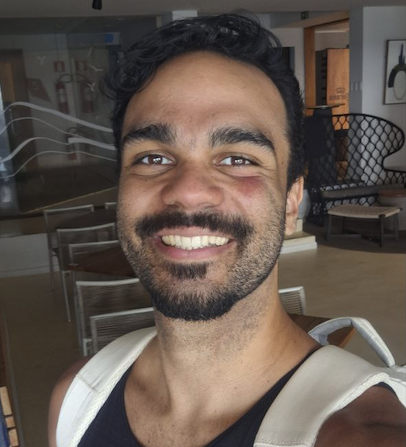

PORTFÓLIO / CURRÍCULO

Olá, sou Pedro Teles
Análise de Negócios & Gestão de Produto
Salvador, BA — Brasil · Administração, UFBA · PT · EN · IT · 中文
Estudante de Administração da UFBA, na interseção entre dados, produto e operações. Escolha abaixo a área que mais se conecta com a vaga que você está avaliando — cada uma mostra os projetos, certificados e habilidades mais relevantes para ela.
ESCOLHA UMA ÁREA
Finanças
Análise financeira, modelagem e indicadores de desempenho.
Ver perfilOperações
Planejamento estratégico, processos e indicadores operacionais.
Ver perfilMarketing & Growth
Performance de negócios, growth analytics e benchmarking.
Ver perfilProduto
Gestão de produto, pesquisa e desenvolvimento front-end.
Ver perfilVamos conversar
Aberto a oportunidades de estágio em negócios, dados e produto.
teles.pedro97@gmail.com